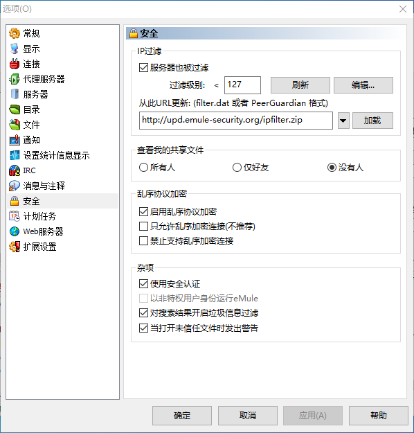

eMule 0.50a
eMule 是世界上最大最可靠的点对点文件共享客户端之一。由于它奉行开发源代码的政策，众多的开发者得以对 eMule 工程有所贡献。随着每一个版本的发布，eMule 的开发者网络都变得更有效率。

官方网站
https://www.emule-project.net/home/perl/general.cgi?l=42
更新服务器
点击链接添加到 eMule
或转到 eMule 服务器选项卡，复制此链接（http://upd.emule-security.org/server.met）并将其粘贴到“从 URL 更新 server.met”输入框中，然后点击更新按钮。
也可以转到 eMule 选项 -> 服务器，并启用“启动时自动更新服务器列表”选项。然后，点击“列表”按钮，并粘贴链接（http://upd.emule-security.org/server.met）。 禁用选项“连接到服务器时更新服务器列表”和“连接到其他客户时更新服务器列表”。转到 eMule 选项 -> 安全，启用“服务器也被过滤”选项。
注意：
该服务器列表中不包含任何由 anti-peer2peer 组织创建的假服务器（例如 Sonny Boy）。
连接 Kad
初始连接 Kad 网络， 需要具有连接 Kad 的其他用户列表文件。
下载文件 nodes.dat 并将其放置到 C:\Users\用户名\AppData\Local\eMule\config 目录中。
转到 eMule Kad 选项卡，然后点击“连接”按钮。
之后连接 Kad，无需更新文件 node.dat。
更新 IP 过滤器
要更新 IP 过滤器，请转到 eMule 选项 -> 安全，将此链接（http://upd.emule-security.org/ipfilter.zip）复制并粘贴到“从此 URL 更新”输入框中，然后点击“加载”按钮，同时启用“服务器也被过滤”选项。

注意：
如果使用 eMule 0.42 或更早版本，则可以通过此链接手动下载 IP 过滤器。
下载后，将 guarding.p2p 文件解压缩到 C:\Users\用户名\AppData\Local\eMule\config 目录中，并将其重命名为 ipfilter.dat。
转到 eMule 选项 -> 安全，然后单击“刷新”按钮。
下载
https://www.emule-project.net/home/perl/general.cgi?l=42&rm=download
许可协议：

本内容采用知识共享署名-非商业性使用 4.0 国际许可协议进行许可，转载请注明出处。